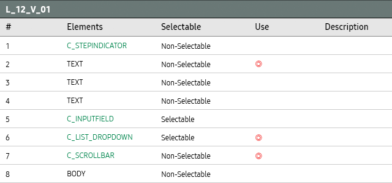

- Definition
-
Use Layout 12 Variation 01 to lead users through a complicated setup or a multistep process, and to provide helpful information along the way.
Use this layout to select an option and it leads to the next screen automatically without another confirm action.
- Specs
-
- Properties
-
- Note
-
- 1. Display progress through a sequence of numbered steps.
- 2. Display the title of the current screen.
- 3. Display the primary description.
- 4. Display the additional desciption if it is needed.
- 5. Display an input field.
- 6. Display a list of setting options.
- 7. When the focus moves up and down in the list, display the vertical scroll bar on the side of the screen.
- 8. Body is freely configurable as needed.
- Initial State
-
- - The focus is on the first(top) item of the dropdown list.
- Layout Element Table
-

- Examples
-
- OOBE, Connection Guide
- *Tags :
-
Step Indicator,
Input Field,
Dropdown List,
Scroll Bar